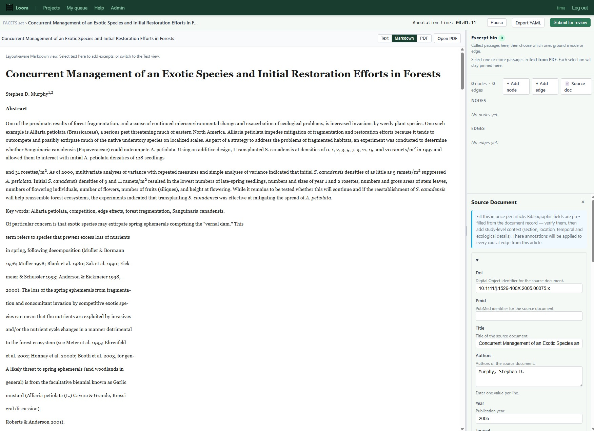
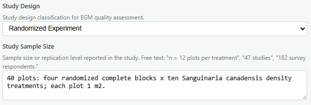
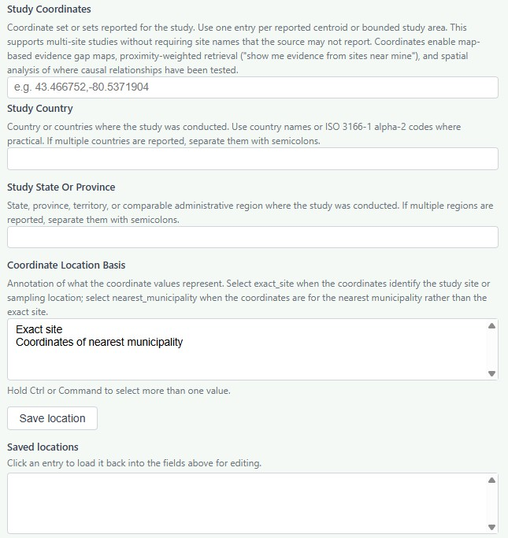
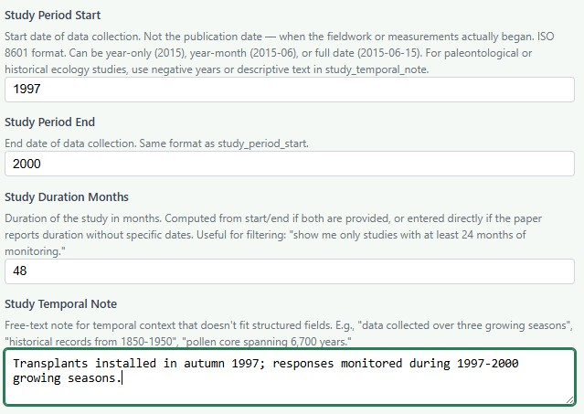
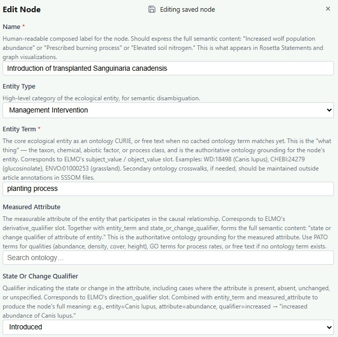
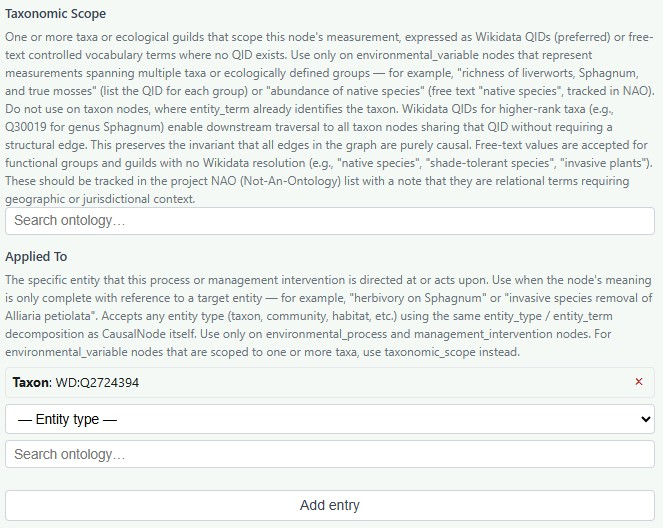
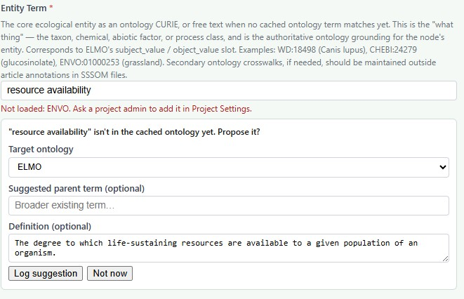
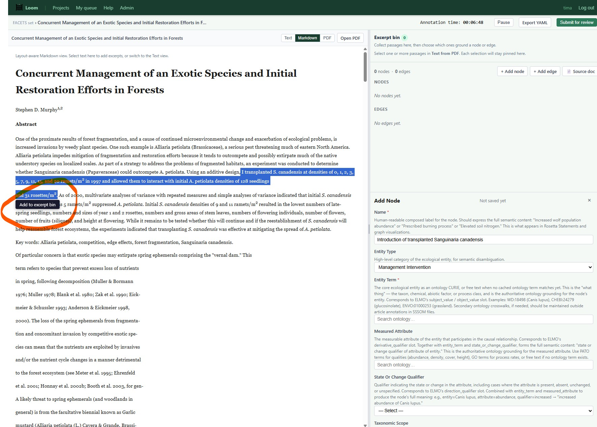
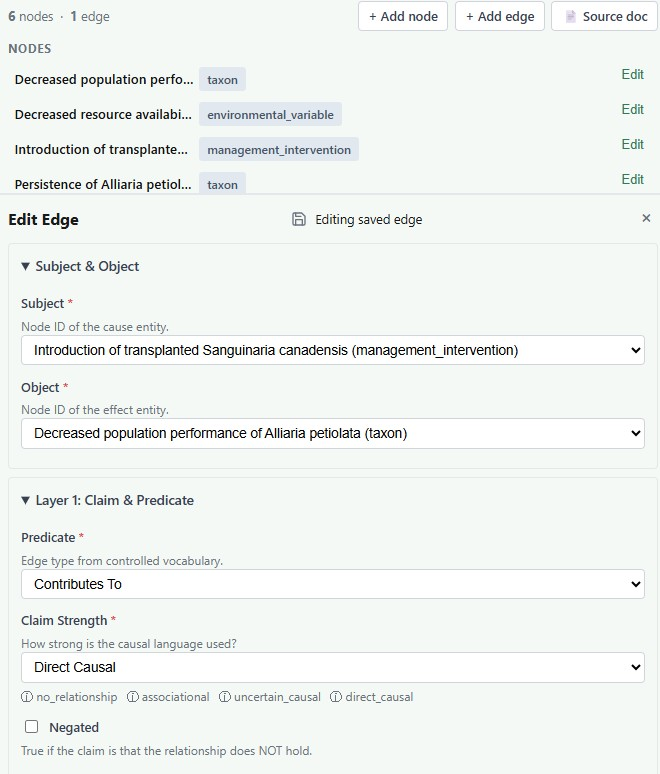

CAMO Annotation Guide
A step-by-step handbook for annotating causal claims in ecological literature
This guide walks you through annotating a scientific paper using the Causal Mosaic (CAMO) schema inside Loom. We use Murphy (2005) — a restoration ecology study on bloodroot and garlic mustard — as our running example throughout.
What is CAMO?
CAMO stands for Causal Mosaic. It is a structured way of recording what a scientific paper claims causes what — not the data or statistics themselves, but the conceptual claims the authors make about cause and effect in ecological systems.
Think of it like reading a paper and asking: "What does this author argue actually causes what?" Then encoding that argument in a rigorous, machine-readable format that can be combined with hundreds of other papers to build a big-picture view of how ecosystems work.
CAMO is built on two foundations:
- ELMO (Ecolink Model Ontology) — provides the structure for entities: every node decomposes into either a variable, taxon, process or intervention. ELMO holds variables, processes and interventions.
- Illari & Russo's Causal Mosaic (2014) — provides the philosophical framework for edges: four layers of annotation capture how strong a causal claim is, what kind of causation it invokes, what features characterize the relationship, and what evidence supports it.
The most important thing: level of abstraction
CAMO operates at the level of conceptual causal claims — not observations, data points, or statistical results. This is the single biggest thing to understand before you start annotating.
Here's what that looks like in practice, using Murphy (2005):
| ❌ Data level — wrong for CAMO | ✅ Claim level — right for CAMO |
|---|---|
| "In plots with 9 ramets/m², mean seedling count was 12.3 ± 2.1" | "Transplanting S. canadensis decreased A. petiolata population performance" |
| "F(9,30) = 4.83, p < 0.001" | "The effect was strongly dose-dependent (captured in edge strength metadata)" |
| "Plot 3, Block B had the highest garlic mustard cover" | "At the start of the experiment, A. petiolata was abundant" |
Murphy's paper tests ten planting densities. You do not create one node per density treatment. Instead, you create one intervention node for "introduction of transplanted bloodroot" and capture the dose-response relationship as metadata on the causal edge.
A useful test: if two papers studying the same system in different places would both be making the same underlying claim, that claim is at the right level of abstraction for CAMO. If the claim only makes sense for one specific plot on one specific day, it belongs in the evidence layer, not here.
Verify the Source Document
Before touching nodes or edges, make sure the bibliographic metadata is correct. This information flows into every edge you create and is critical for evidence synthesis downstream.

The source document fields appear at the top of the annotation workspace. Verify each field before beginning annotation.
Required fields
Check that all of these are filled in correctly:
- doi — the Digital Object Identifier. If a DOI exists, use it. It is the stable permanent identifier for the paper.
- title — the full title, exactly as published
- authors — as a list, surname first or as published
- year — publication year (not data collection year)
- journal — full journal name
- study_design — pick the closest match (e.g.,
randomized_experiment,observational_longitudinal)

The study design dropdown and sample size field. Choose the closest match for study design and describe replication level as free text in sample size.
Spatial and temporal context
These fields power map-based evidence gap maps and help practitioners find studies near their site:
- study_coordinates — latitude and longitude in decimal degrees (WGS 84) if reported. Loom will guess the country and province/state from the coordinates you enter here. If no coordinates are reported, use the coordinates from the nearest named location (usually a municipality).
- study_country and study_state_or_province — where the fieldwork happened (not where the authors are based)
- study_period_start / end — when data collection happened, in ISO format (e.g.,
1997,2000). Not the publication date. - study_sample_size — free text, e.g., "40 plots: 4 randomized complete blocks × 10 density treatments"

Study coordinates and location fields. Enter coordinates in decimal degrees (WGS 84) and indicate whether they represent the exact site or the nearest municipality.

Temporal context fields. Study period refers to when data collection happened — not the publication date. Use the temporal note for free-text context that doesn't fit the structured fields.
doi: "10.1111/j.1526-100X.2005.00075.x" title: "Concurrent Management of an Exotic Species and Initial Restoration Efforts in Forests" authors: - "Stephen D. Murphy" year: 2005 journal: "Restoration Ecology" study_country: "Canada" study_state_or_province: "Ontario" study_period_start: "1997" study_period_end: "2000" study_temporal_note: "Transplants installed autumn 1997; responses monitored during 1997-2000 growing seasons." study_design: randomized_experiment study_sample_size: "40 plots: 4 randomized complete blocks x 10 Sanguinaria canadensis density treatments; each plot 1 m²."
study_period_start/end — these are often confused with publication year.
Identify Nodes
A node represents a causally relevant entity in the paper — something that participates in a cause-and-effect relationship. Before you can draw any arrows, you need to identify all the "things" the paper claims are causing or being caused.
It can be helpful from a workflow perspective to think about all of the nodes in a paper before you start annotating. Nodes should only be included if there is an edge.
The CAMO decomposition: the anatomy of a node
In CAMO, things don't cause things. A species by itself doesn't cause anything. What matters is a change in a measurable property of that species. Every node decomposes into three main parts.
For example:
- Entity: Alliaria petiolata (garlic mustard)
- Attribute: population performance (how well the population is growing)
- Change qualifier: decreased
- → Full meaning: "Decreased population performance of Alliaria petiolata"
This decomposition means you can later ask questions like "show me all claims about abundance changes in Alliaria petiolata" or "what processes affect population performance in this system?" — questions that would be impossible with free-text descriptions.
In Loom, these three parts correspond to three fields: entity_term, measured_attribute, and state_or_change_qualifier. The name field is a human-readable composed form of all three.
The four entity types
Every node has an entity_type — the broad category of the thing at the heart of the node. There are four types in CAMO v0.7.4:
taxon
A biological species, genus, or population that is the subject of a causal claim. The measured attribute describes what property of that taxon is causally relevant.
Use for: a single species with a single measurable attribute. E.g., Alliaria petiolata with measured_attribute: population performance.
Murphy examples: All four garlic mustard nodes (population performance, reproductive output, seed bank persistence, seedling emergence).
Grounding: We use Wikidata as the canonical source for taxa. Loom will automatically suggest terms grounded in Wikidata. The reason we do this is that Wikidata serves as a kind of identity broker - the page for Alliaria petiolata contains 104 identifiers in other databases and translations of the common name in dozens of languages.
environmental_variable
A measurable aspect of ecosystem state at a point in time — a "snapshot" of a condition. Examples: soil pH, canopy height, light availability, native species richness, bare soil cover.
Use for: abiotic conditions, multi-taxon aggregates (using taxonomic_scope), or ecosystem state variables.
Murphy examples: Resource availability to A. petiolata; reestablishment of native understory species (with taxonomic_scope: native forest understory species).
Grounding: There is not a single source for environmental variables. Some will be grounded in ENVO or PATO. We have added many to ELMO.
environmental_process
A natural process that changes ecosystem state over time — a "flow" rather than a snapshot. Examples: competitive exclusion, trophic cascade, nitrogen deposition, succession, seed dispersal.
Use for: natural ecological processes that drive change. If humans are deliberately doing it, use management_intervention instead.
Murphy examples: Spring phenological overlap between bloodroot and garlic mustard could be modeled as an environmental process, though the Murphy annotation rolls this into mediation metadata on edges.
Grounding: Most of these will be in ENVO.
management_intervention
A deliberate human action intended to change an ecological outcome. A subtype of environmental_process — it is a process, but one with a human agent.
Use for: prescribed burning, seeding, invasive removal, planting, hydrological restoration, etc.
Murphy example: Transplanting Sanguinaria canadensis at varying densities.
Grounding: This should be exclusively grounded in ELMO. Loom will auto-suggest these terms.
entity_type: taxon. If it reports on a group of species (e.g., "native species richness", "invasive plant cover"), use entity_type: environmental_variable and list the taxa in taxonomic_scope.
Node fields walkthrough
Here are all the fields you'll fill in for each node:
| Field | What it is | Required? |
|---|---|---|
id | Permanent unique identifier. Auto-generated by Loom. | Auto |
name | Human-readable composed label: "Decreased population performance of Alliaria petiolata" | Yes |
entity_type | One of the 4 entity types above | Yes |
entity_term | Ontology CURIE for the entity — ideally a Wikidata QID for taxa, ENVO term for environments, GO term for processes. Can be free text as a fallback. | Yes |
measured_attribute | What property of the entity is being measured. Ideally a PATO term (e.g., PATO:0000070 = abundance). | Strongly recommended |
state_or_change_qualifier | What happened to the attribute: increased, decreased, present, absent, unchanged, introduced, removed, etc. | Yes |
taxonomic_scope | For environmental_variable nodes only: which taxa are included in this measurement | When applicable |
applied_to | For management_intervention nodes: what organism or system the intervention targets | When applicable |
source_spans | Verbatim text quotes from the paper that ground this node | Yes |

The top half of the node form. Fill in the name as a composed human-readable label, then set entity type, entity term, measured attribute, and state/change qualifier.

The bottom half of the node form. Taxonomic scope is used only on environmental_variable nodes spanning multiple taxa. Applied to is used on management_intervention and environmental_process nodes to specify the target entity.
Permanent identifiers — a critical step
The entity_term field should almost always contain an ontology CURIE rather than plain text. A CURIE looks like WD:Q157057 or ENVO:01000253. This is one of the most important practices in CAMO annotation.
WD:Q157057 and every edge involving bloodroot across hundreds of papers can be connected automatically.
Here's which ontology to use for different entity types:
| Entity type | Preferred ontology | Example |
|---|---|---|
| Taxa (species, genus) | Wikidata (WD:Q…) | WD:Q157057 = Sanguinaria canadensis |
| Environments | ENVO | ENVO:01000253 = grassland |
| Qualities/attributes | PATO | PATO:0000070 = abundance |
| Biological processes | GO (Gene Ontology) | GO:0008150 = biological process |
| Conservation actions | IUCN CAS / ELMO | elmo_cas:ConservationAction |
To find ontology terms, Loom has a built-in autocomplete that searches the local ontology index. You can also use the EMBL-EBI Ontology Lookup Service (OLS) or search Wikidata directly for taxon QIDs. If you use the autocomplete function, the form will fill with the text of the term, but rest assured that the CURIE is actually being saved.
entity_term: "plant translocation process"). Loom will flag this for curation. Write the most specific free text you can, and add a note that no ontology term was found.

When your entity term isn't found in the cached ontology, Loom prompts you to propose it. Select the target ontology, optionally add a broader parent term and a definition, then click Log suggestion to submit it for curation.
Murphy 2005 walkthrough: identifying all nodes
Murphy (2005) is a 4-year field experiment in Ontario in which Sanguinaria canadensis (bloodroot, a native spring ephemeral) was transplanted at ten different densities to test whether it could suppress Alliaria petiolata (garlic mustard, an invasive herb). Murphy's experiment uses 40 plots in a randomized block design.

Highlight a passage in the paper text to add it to the excerpt bin. Then click + Add node to open the node form on the right — the selected text will become a source_span grounding the node you create.
Before opening Loom, read the paper once through and ask: "What does this paper claim is causing what?" Jot down the key claims. Then identify the entities involved. For Murphy (2005), those are:
The resulting node list for Murphy (2005) — seven nodes total:
| # | Name | entity_type | entity_term | measured_attribute | qualifier |
|---|---|---|---|---|---|
| 1 | Introduction of transplanted S. canadensis | management_intervention | plant translocation | — | introduced |
| 2 | Decreased population performance of A. petiolata | taxon | WD:Q30055 | population performance | decreased |
| 3 | Decreased reproductive output of A. petiolata | taxon | WD:Q30055 | reproductive output | decreased |
| 4 | Decreased resource availability to A. petiolata | environmental_variable | resource availability | — | decreased |
| 5 | Persistent A. petiolata seed bank | taxon | WD:Q30055 | seed bank persistence | present |
| 6 | Unchanged seasonal seedling emergence | taxon | WD:Q30055 | seasonal seedling emergence | unchanged |
| 7 | Reestablishment of native understory species | environmental_variable | re-establishment | — | increased (negated at edge) |
id: node:murphy2005_alliaria_population_performance
name: "Decreased population performance of Alliaria petiolata"
entity_type: taxon
entity_term: "Alliaria petiolata" # ideally: WD:Q30055
measured_attribute: "population performance"
state_or_change_qualifier: decreased
source_spans:
- text: "initial S. canadensis densities of as little as 5 ramets/m²
suppressed A. petiolata"
- text: "densities of 9 and 11 ramets/m² resulted in the lowest numbers
of late-spring seedlings, numbers and sizes of year 1 and 2 rosettes"
measured_attribute. This is correct. The entity is the same (Alliaria petiolata) but each node captures a different thing being measured about it. Population performance and reproductive output are causally distinct endpoints that connect to different parts of the causal graph.
Map the Causal Pathways
Before encoding formal edges in Loom, sketch the causal graph on paper (or a whiteboard). Ask: which nodes cause which other nodes? Draw arrows.
For Murphy (2005), the five causal pathways are:
- Transplanting → Population performance (negative: bloodroot suppresses garlic mustard populations)
- Transplanting → Reproductive output (negative: bloodroot reduces garlic mustard seed set)
- Transplanting → Resource availability (negative: bloodroot competes for light — the proposed mechanism)
- Seed bank → Seedling emergence (positive: the persistent seed bank buffers autumn seedling emergence)
- Transplanting → Native reestablishment (null: no increase in native species detected in 4 years)
Notice that nodes 2 and 3 are both effects of node 1, but they represent different aspects of garlic mustard performance. This matters because the mechanism connecting them is slightly different, and the management implication (reproductive suppression → eventual local population decline) is a distinct causal claim that deserves its own edge.
Encode Edges
An edge is a single causal claim — one arrow in the graph. It connects a cause node (subject) to an effect node (object) via a predicate (the type of causal relationship). Edges are where most of the annotation work happens.
Every edge has four annotation layers, plus supporting metadata. We'll go through each in turn.
Basic structure: subject → predicate → object
Every edge begins with three required fields:
subject— the node ID of the causepredicate— what kind of causal relationship this is (from a controlled vocabulary)object— the node ID of the effectnegated— set totrueif the claim is that the relationship does not hold
Predicates
Choose the predicate that best matches the direction and type of causal influence described:
- Causal positive (A makes B happen or increases B):
causes(strong, sole) orcontributes_to(one of many) orenables(facilitates but not sufficient) orpositively_regulates(modulates upward) - Causal negative (A suppresses or reduces B):
prevents(blocks it) ordisrupts(degrades it) ornegatively_regulates(modulates downward) - Uncertain direction:
regulates - Association only (no causal commitment):
associated_withorcorrelated_with
The negated field
This is used when the paper explicitly says a relationship does not exist. For Murphy (2005), the paper states that transplanting bloodroot did not lead to an increase in native species by 2000. The edge predicate is still enables (because we're asking about a positive facilitation pathway), but negated: true captures that this pathway was absent.
negatively_regulates) means the relationship goes in the negative direction. A negated edge means the relationship claimed to hold does not hold at all. These are different. Murphy's bloodroot → native recovery edge has predicate: enables and negated: true because the author is saying "we hoped bloodroot would enable native recovery, but it did not."
Layer 1: Claim strength
How confident and direct is the causal language in the text? There are four levels:
"did not affect"
"associated with"
"may contribute to"
"leads to", "causes"
- "transplanting S. canadensis was effective at mitigating the spread of A. petiolata" →
direct_causal - "It appears that intermediate and higher densities deprived A. petiolata of sufficient resources" →
uncertain_causal(the word "appears" hedges the causal claim) - "By 2000, I had not detected any increase in other native species" →
no_relationship
You'll also provide the original_sentence — the full sentence from the text that best expresses this causal claim. This is preserved verbatim for quality control and RAG retrieval.
Layer 2: Philosophical accounts of causation
This is the most philosophically interesting part of CAMO. Every causal claim implicitly invokes a particular theory of what causation is. CAMO asks you to make this explicit.
Causal philosophers distinguish two fundamental families of account: difference-making (does C make a difference to whether E happens?) and production (how does C bring E about?). There are also complementary accounts that add structural nuance.
Difference-making accounts
interventionist
Canonical question: "Does intervening on C change E?"
Based on philosopher James Woodward's (2003) theory. If you can perform a controlled intervention on the cause — changing it while holding other things constant — and E reliably changes as a result, this is interventionist causation. This is the account that randomized experiments are designed to test.
counterfactual
Canonical question: "Would E have occurred without C?"
Based on David Lewis's (1973) theory. C causes E if, had C not occurred, E would not have occurred. In practice, this is operationalized by control groups and potential outcomes frameworks. The control plots with 0 ramets/m² serve as the counterfactual for Murphy's experiment.
probabilistic
Canonical question: "Does C raise the probability of E, or do variations in C systematically track variations in E?"
C causes E if C raises the probability of E (or lowers it, for negative causation). Also covers cases where systematic variation in C tracks variation in E — operationalized by regression, path analysis, or dose-response relationships.
Production accounts
mechanistic
Canonical question: "What entities and activities produce E from C?"
Based on Machamer, Darden, and Craver (2000). Causation involves identifiable entities and activities organized to produce the phenomenon — a mechanism. In ecology, mechanisms might be competition for resources, trophic interactions, or chemical signaling. When an author proposes a how, they are invoking a mechanistic account.
claim_strength: uncertain_causal.
transmission
Canonical question: "What conserved quantity, material flow, signal, or information is transmitted from C to E?"
Based on Salmon's mark-transmission and Dowe's conserved-quantity theory. Causal production as a physical, material, or informational transfer. More common in nutrient cycling, water flow, contaminant tracing, or gene expression studies. Less common in community ecology.
transmission would typically not be selected for this paper's edges.
Complementary accounts
regularity
Canonical question: "Does C-type always or usually precede E-type?"
Based on Hume and Mill. Causation as constant conjunction — whenever you see C, you see E following. Strong, consistent observational patterns across many instances support a regularity account. Long-term monitoring and survey studies often provide regularity evidence.
agency
Canonical question: "Can an agent bring about E by doing C?"
Based on von Wright (1971). C causes E if bringing about C would be an effective means for a free agent to bring about E. This account is especially important in management and restoration ecology — it's the account that makes causal claims actionable. When a paper recommends a management prescription, it is implicitly invoking the agency account.
inus_component
Canonical question: "Is C a necessary component of a sufficient cause constellation?"
Based on Mackie (1965). C is an "Insufficient but Necessary part of an Unnecessary but Sufficient condition." In plain English: C alone isn't enough to produce E, and E can sometimes happen without C, but C is still a necessary part of some set of conditions that together would be sufficient. This captures multifactorial causation in complex ecological systems.
- Illari & Russo (2014) Causality: Philosophical Theory Meets Scientific Practice (Oxford) — the primary source for CAMO's philosophical framework
- Woodward (2003) Making Things Happen (Oxford) — the foundational text on interventionist causation
- Machamer, Darden & Craver (2000) "Thinking about Mechanisms" Philosophy of Science — the canonical mechanistic account
Layer 3: The 15 causal features
This is the most detailed annotation layer. CAMO's 15 causal features are structured questions about the character of the causal relationship. Each feature has a fixed set of values: explicitly_asserted, implicitly_assumed, explicitly_denied, or not_addressed.
Your job is to look at what the text actually says about each feature — not what you think is true, but what the paper claims. If the paper doesn't address a feature, mark it not_addressed.
explicitly_asserted— the text directly states this feature holdsimplicitly_assumed— the text strongly implies it without saying so directlyexplicitly_denied— the text says this feature does NOT holdnot_addressed— the text says nothing about this feature
Features are grouped here by theme to help you understand how they relate to each other.
Logical properties of the relationship
1. necessity
Is C necessary for E? Could E have happened without C at all?
Necessity is a strong claim — it means "E cannot happen without C." In ecology, this is rarely true; there are almost always alternative pathways. Be conservative: if the text doesn't say C is necessary, mark not_addressed.
not_addressed — Murphy does not claim bloodroot transplanting is the only way to suppress garlic mustard.2. sufficiency
Is C sufficient for E? Does C alone guarantee E, with no other factors needed?
Sufficiency means "C alone is enough to produce E." Murphy explicitly denies this: even where bloodroot was transplanted, garlic mustard was suppressed but not eliminated — the seed bank persisted and immigration from nearby areas could counter the effect.
explicitly_denied — "a long-term implication is that populations of A. petiolata will decrease locally as long as immigration of new seeds does not counter this." The conditional language signals that bloodroot transplanting alone is not sufficient.3. proportionality
Is the cause specified at the right level of specificity — neither over-generalized nor overly detailed?
Proportionality asks whether the author is being appropriately specific about what is causing what. If a study tests bloodroot specifically and the claim is made about bloodroot (not "all spring ephemerals"), that's proportional. This feature is often explicitly_asserted in experimental work where treatments are precisely defined.
explicitly_asserted — Murphy is specific about the cause (transplanted S. canadensis at defined densities) and the effect (measured garlic mustard variables).4. determinism
Is the causal process framed as deterministic, probabilistic, or is the probability just epistemic uncertainty?
This is a subtle distinction. Sometimes probability reflects genuine randomness in the causal process (indeterministic). Sometimes it reflects our uncertainty about an otherwise deterministic process. Murphy's statistical results don't tell us which — mark ambiguous unless the paper explicitly discusses this.
ambiguous — Murphy uses statistics but doesn't discuss whether the suppression process is fundamentally deterministic or probabilistic.Direction and time
5. direction
Which direction does the causal arrow point? And what evidence supports that direction?
This feature has sub-fields: status (asserted / uncertain / bidirectional / not_addressed) and evidence_for_direction (experimental / temporal_precedence / theoretical / natural_experiment / structural_model).
status: asserted, evidence_for_direction: experimental. The experimental design (transplanting causes measurement) makes the direction unambiguous.6. temporal_ordering
Does the cause come before the effect in time? Does the paper establish this?
Temporal ordering is a minimum requirement for causation — causes precede effects. In experimental studies like Murphy's, the transplanting happened in autumn 1997 and effects were measured in subsequent growing seasons — so temporal ordering is explicit.
explicitly_asserted — transplants were installed first, garlic mustard responses were measured afterward across four growing seasons.7. proximate_distal
Is the cause a direct, immediate trigger (proximate), or a more distant upstream cause (distal)?
Proximate causes are immediately adjacent to the effect in the causal chain. Distal causes operate through intermediate steps. In Murphy's causal chain: transplanting is the proximate cause of resource reduction, and resource reduction is the proximate cause of garlic mustard suppression — so transplanting is a distal cause of suppression.
proximate at the level of this edge, even though there's an inferred mechanism. The distinction between edges lets us represent this properly.Mechanism and modifiers
8. mediation
Is there an intermediate variable (a mediator) between the cause and the effect? What is the pathway?
Mediation captures the causal chain. If C → M → E (where M is a mediator), you should (a) create a node for M, (b) create edges C→M and M→E, and (c) note M as a mediator in the main C→E edge. Mediation has sub-fields: status, mediator_node_ids, and pathway_description.
implicitly_assumed because Murphy proposes it but did not directly test the mechanism.9. moderation
Does a third variable (a moderator) change the strength or direction of the relationship between C and E?
A moderator doesn't sit on the causal pathway (that's a mediator) — it modifies how strong the effect is. Sub-fields: status, interaction_type (synergistic / antagonistic / qualitative / quantitative), and moderator_node_ids.
quantitative interaction (magnitude changes, not direction). The moderator is captured as context dependence and strength metadata rather than a separate moderator node in this annotation.10. specificity
Is the causal relationship specific to this particular cause-effect pair, or does C have many effects and/or E have many causes?
High specificity means "A causes B and not much else; B is caused by A and not much else." In complex ecological systems, true specificity is rare — most ecological variables have multiple causes. If the paper addresses this, note it; otherwise, mark not_addressed.
explicitly_asserted for the mechanism edge — Murphy argues the suppression is via competition specifically (not allelopathy or other mechanisms, though he acknowledges these haven't been ruled out).11. stability
Is the causal relationship stable across different contexts, conditions, or time periods?
Stability is about robustness: would the same relationship hold in a different forest patch, a different year, a different climate? A paper that tests only one site in one year cannot assert stability — it would be not_addressed unless the authors explicitly comment on generalizability.
not_addressed for most edges — Murphy only studied one site. He speculates about generalizability but doesn't test it.Character of the cause
12. token_or_type
Is this a claim about this specific instance (token), or a general pattern (type)?
A token claim says "in this specific study, at this specific time, bloodroot transplanting suppressed garlic mustard." A type claim says "in general, bloodroot transplanting suppresses garlic mustard populations." CAMO primarily captures type claims — the generalizations that can be combined across papers. Most claims in scientific papers are type claims unless authors explicitly restrict them to a specific instance.
type — Murphy generalizes his results to the management of garlic mustard in deciduous woodlots. The null finding (no native species recovery by 2000) is token — it's specific to this site at this time.13. contributing_sole
Is C presented as the sole cause of E, or as one of several contributing factors?
In ecology, sole causation is almost never asserted — ecosystems are complex and most outcomes have multiple causes. When a paper says "X reduces Y" without claiming X is the only thing that reduces Y, mark contributing_cause.
contributing_cause for all edges — Murphy does not claim bloodroot is the only factor affecting garlic mustard dynamics.14. reversibility
If the cause is removed, does the effect reverse? Is the relationship hysteretic?
Reversibility is central to restoration ecology: if we stop the management intervention, does the ecosystem revert? Hysteresis means recovery follows a different trajectory than degradation — a common pattern in alternative stable state systems.
partially_reversible — Murphy doesn't test what happens if bloodroot is removed, but the persistence of the garlic mustard seed bank implies that garlic mustard populations could recover if treatment stopped. The partial reversibility is implicit.15. strength
How large or strong is the causal effect?
Strength has structured sub-fields: status (FeatureAssertionEnum), quantitative_value (free text for effect sizes), qualitative_descriptor (strong / moderate / weak / negligible), and dose_response (boolean).
The quantitative_value field is not for raw data — it's for a brief characterization of what the paper reports, like "effective threshold reported from about 5 ramets/m²; strongest results at 9–11 ramets/m²."
status: explicitly_asserted, qualitative_descriptor: strong, dose_response: true, quantitative_value: "Effective threshold from ~5 ramets/m²; strongest at 9–11 ramets/m²."Context dependence
context_dependence is an additional structured field (beyond the 15 features) that captures the scope conditions — where, when, and under what circumstances does this relationship hold?
context_dependence
Under what conditions does this relationship hold? Where and when was it tested?
Sub-fields: status, scope_conditions (list of conditions), geographic_scope, temporal_scope, ecosystem_scope.
This is one of the most important fields for practitioners. A relationship found in a degraded Ontario woodlot in the 1990s may not hold in a large continuous forest or in a different climate zone.
scope_conditions:"degraded deciduous woodlot edge"; "high local A. petiolata density"; "intermediate S. canadensis density most effective"geographic_scope:"Region of Waterloo, Ontario, Canada"temporal_scope:"1997–2000 field experiment"ecosystem_scope:"degraded deciduous forest/woodlot edge"
Layer 4: Evidential basis
The final annotation layer records what kind of evidence supports the causal claim. This follows the Russo-Williamson thesis: good causal evidence should include both difference-making evidence (showing C makes a difference to E) and production evidence (showing how C produces E mechanistically).
Two required sub-fields:
evidence_types — what kind of study produced this evidence? Pick all that apply:
randomized_experiment— randomized controlled trial or field experimentnatural_experiment— exogenous shock or natural experimentquasi_experiment— BACI, difference-in-differences, etc.observational_longitudinal— cohort or panel studyobservational_cross_sectional— cross-sectional surveymechanistic_study— laboratory or field study of mechanismmeta_analysis,systematic_review,modeling_simulationtheoretical— deduction from theory onlyexpert_judgment,case_study,practitioner_experience
evidence_objects — what does the evidence address?
correlation— shows C and E co-vary (difference-making)mechanism— shows how C produces E (production)both— addresses both correlation and mechanism
evidential_basis:
evidence_types:
- randomized_experiment
evidence_objects:
- both # Murphy reports statistical effects AND proposes a mechanism
[randomized_experiment, theoretical] and the evidence object is both — the experiment provides the correlation, theory (light competition) provides the mechanism.
Supporting metadata
temporal_extent
How long did it take for the causal effect to be observed? This is not the study duration — it's the timescale of the causal relationship itself.
duration_months— numericduration_text— free text as stated in the paper (e.g., "Four growing seasons")lag_months— how long after the cause before the effect appearedobservation_grain— at what interval was it measured (seasonal, annual, etc.)observation_seasons— which seasons (important for spring ephemerals like bloodroot!)
fcm_weight
A numeric weight between -1.0 and +1.0 for Fuzzy Cognitive Map rendering. Negative weights are for inhibitory relationships. This is usually filled in automatically from the predicate and strength annotation — you may leave it to the system or override it. For Murphy's main suppression edge, fcm_weight: -0.75 captures a strong negative regulatory relationship.
source_spans
The verbatim text quotes from the paper that ground this edge. These are critical for provenance — future users can check exactly where you got the claim. In Loom, you create these by highlighting text in the PDF viewer. Always provide at least one source span per edge.
annotation_confidence
Your overall confidence in the annotation, from 0.0 (wild guess) to 1.0 (certain). Be honest. If you're unsure about the philosophical accounts or a causal feature, reflect that in a lower confidence score and leave a note in annotation_notes.
Murphy 2005 walkthrough: all five edges

The edge annotation panel with Layer 1 (Claim & Predicate) expanded. Select predicate and claim strength, optionally check Negated, and paste the original sentence. The node list at the top shows all available nodes to connect. Layers 2–4 appear as collapsible panels below.
subject: node:murphy2005_sanguinaria_transplanting
predicate: contributes_to
object: node:murphy2005_alliaria_population_performance
negated: false
claim_strength: direct_causal
original_sentence: "the experiments indicated that transplanting
S. canadensis was effective at mitigating the spread of A. petiolata."
philosophical_accounts: [interventionist, probabilistic, agency]
necessity: not_addressed
sufficiency: explicitly_denied
direction:
status: asserted
evidence_for_direction: experimental
temporal_ordering: explicitly_asserted
mediation:
status: implicitly_assumed
mediator_node_ids: [node:murphy2005_resource_availability_to_alliaria]
pathway_description: "Competition during spring phenological overlap,
probably through reduced light availability."
moderation:
status: explicitly_asserted
interaction_type: quantitative
strength:
status: explicitly_asserted
quantitative_value: "Effective from ~5 ramets/m²; strongest at 9-11 ramets/m²."
qualitative_descriptor: strong
dose_response: true
token_or_type: type
contributing_sole: contributing_cause
reversibility: partially_reversible
proportionality: explicitly_asserted
context_dependence:
status: explicitly_asserted
scope_conditions:
- "degraded deciduous woodlot edge"
- "intermediate S. canadensis density most effective"
geographic_scope: "Region of Waterloo, Ontario, Canada"
temporal_scope: "1997-2000 field experiment"
ecosystem_scope: "degraded deciduous forest/woodlot edge"
evidential_basis:
evidence_types: [randomized_experiment]
evidence_objects: [both]
fcm_weight: -0.75
annotation_confidence: 0.92
subject: node:murphy2005_alliaria_seed_bank_persistence predicate: enables object: node:murphy2005_alliaria_seedling_emergence negated: false claim_strength: uncertain_causal original_sentence: "Early-spring emergence of seedlings in A. petiolata remained relatively constant, probably indicating that an existing, extensive seed bank persisted throughout." philosophical_accounts: [mechanistic, regularity] # Key insight: this edge LIMITS the practical impact of the intervention. # The seed bank (node 5) buffers against the suppression effects on # flowering adults — a critical constraint for long-term management.
subject: node:murphy2005_sanguinaria_transplanting predicate: enables object: node:murphy2005_native_understory_reestablishment negated: true # the claim is that this relationship does NOT hold (yet) claim_strength: no_relationship original_sentence: "By 2000, I had not detected any increase in other native species or other exotics in any treatments." token_or_type: token # specific to this site, this time window fcm_weight: 0.0 annotation_confidence: 0.86
Quality checklist
Before submitting your annotation, run through this checklist:
- Source document metadata is complete and verified against the actual paper
- Every node has a clear, composed name expressing entity + attribute + qualifier
- Every node has at least one
source_spanwith verbatim text - Entity terms use ontology CURIEs where available; free text is flagged for curation
- No node has zero edges (orphan node rule)
- Causal claims are at the conceptual level — no raw statistics or data values in node names
- Every edge has at least one
source_span - Every edge has an
original_sentence - Philosophical accounts are selected (multiple accounts are expected and encouraged)
- All 15 causal features are filled in (at minimum, mark
not_addressedrather than leaving blank) - Evidential basis (evidence_type and evidence_object) is filled in for every edge
- Null results are annotated as negated edges, not simply omitted
- Mediator nodes appear as both standalone nodes AND in the
mediation.mediator_node_idsfield of parent edges context_dependencecaptures ecosystem, geographic, and temporal scopeannotation_confidencehonestly reflects your certainty
Glossary
- CAMO (Causal Mosaic)
- The annotation schema. Combines ELMO entity structure with Illari & Russo's causal mosaic framework to produce a four-layer annotation for every causal claim.
- ELMO (Ecolink Model Ontology)
- The entity-level ontology framework. Provides the entity + attribute + qualifier decomposition for nodes. Published in Alamenciak et al. (2025).
- Node
- A causally relevant entity in the graph. Decomposes into entity (what thing), measured attribute (what property), and state/change qualifier (what happened to it).
- Edge
- A directed causal claim connecting two nodes. Carries all four annotation layers.
- entity_type
- The broad category of the entity at the core of a node: taxon, environmental_variable, environmental_process, or management_intervention.
- entity_term
- The ontology CURIE (or free-text fallback) identifying the specific entity. For taxa, use Wikidata QIDs (WD:Q…).
- state_or_change_qualifier
- What happened to the measured attribute: increased, decreased, present, absent, unchanged, introduced, removed, etc.
- claim_strength
- How strong is the causal language used in the text? Four levels: no_relationship, associational, uncertain_causal, direct_causal.
- philosophical account
- The implicit theory of causation invoked by a causal claim. CAMO recognizes seven: counterfactual, probabilistic, interventionist, transmission, mechanistic, regularity, inus_component, agency.
- mediation
- A causal feature describing an intermediate variable (mediator) on the pathway between cause and effect. When a mediator exists, it should be represented both as a node and in the mediation metadata of the parent edge.
- moderation
- A causal feature describing a third variable that changes the strength or direction of the cause-effect relationship (an effect modifier or interaction).
- FCM weight
- Fuzzy Cognitive Map weight: a numeric value from -1.0 to +1.0 representing the sign and magnitude of the causal relationship. Used to render the annotation as a causal model.
- Russo-Williamson thesis
- The philosophical position that good causal evidence requires both difference-making evidence (showing C makes a difference to E) and production evidence (showing the mechanism). CAMO's evidence_object field captures whether each edge has correlation evidence, mechanism evidence, or both.
- CURIE
- Compact URI — a shortened form of an ontology term identifier, e.g., WD:Q157057 for Sanguinaria canadensis in Wikidata, or PATO:0000070 for the quality "abundance."
- token claim
- A causal claim about a specific instance: "in this particular study, this specific thing caused that." Compare with type claim.
- type claim
- A general causal claim: "in general, this kind of thing causes that kind of thing." CAMO primarily captures type claims.
- negated edge
- An edge where negated: true signals that the causal relationship claimed to exist does NOT hold. Used for null results and explicitly denied relationships.
- source_span
- A verbatim text quotation from the source paper that grounds a node or edge. Created in Loom by highlighting text in the PDF viewer.
Further reading
These readings will deepen your understanding of the ideas behind CAMO. You don't need to read them all before annotating — start with the first two, then return to others as questions arise.
Foundational philosophy of causation
The primary source for CAMO's philosophical framework. Chapters 1–3 cover the difference-making/production distinction and the mosaic framework. Accessible to non-philosophers.
The foundational text on interventionist causation — the account most directly operationalized by randomized experiments. Chapter 1 is essential reading.
The canonical paper on mechanistic causation. Central to understanding the mechanistic philosophical account in CAMO.
Causal inference and evidence in ecology
Accessible introduction to causal inference using directed acyclic graphs (DAGs). Excellent background for understanding how CAMO's causal graph encodes causal assumptions.
Covers the variation account of causation (probabilistic/statistical) and how it relates to causal inference. Good complement to Woodward for statistical evidence.
The running example
The paper we've used throughout this guide. Read it first, before annotating, to get a feel for what a well-structured annotatable paper looks like — and notice where Murphy is explicit about causation vs. where he hedges.
Schema and technical references
The paper describing ELMO's entity structure, on which CAMO's node decomposition is based.
Bradford Hill's nine "viewpoints" for assessing causation from observational evidence. CAMO maps these viewpoints onto philosophical accounts and causal features — you'll see the correspondence when you read this short paper.